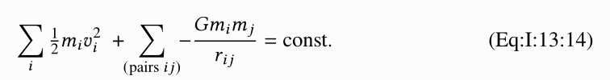

mathjax2mobi：将MathJax HTML转换为电子书 | Original, von KI übersetzt
Projektübersicht
Zuerst möchte ich kurz das Projekt vorstellen.


Nach Abschluss des Projekts war ich ein wenig glücklich. Ich habe den folgenden Satz niedergeschrieben.
Ich habe den ganzen Tag Code geschrieben und endlich ein schönes E-Book der Feynman-Vorlesungen über Physik erhalten! Die Feynman-Vorlesungen sind online verfügbar und mit latex gerendert. latex wird oft für das Schreiben von wissenschaftlichen Arbeiten verwendet, da es mathematische Formeln hervorragend darstellt. Online wird dafür die Bibliothek mathjax verwendet. Diese wandelt den latex-Quellcode in html-Code um und erzeugt dabei viele div- und span-Tags. E-Books unterstützen diese Methode jedoch nicht. Die Idee war also, die Webseiten zu scrapen, das mathjax-Rendering umzukehren und dann durch svg-Bilder zu ersetzen. Dabei traten einige Probleme auf: Zum einen gab es viele benutzerdefinierte latex-Makros im Quellcode, die hinzugefügt werden mussten; zum anderen gab es Probleme mit vielen eingebetteten svg-Dateien. Einzelne svg-Dateien waren kein Problem, aber bei vielen traten Schwierigkeiten auf. Es handelt sich wahrscheinlich um seltsame Bugs zwischen dem Browser und svg. Die Lösung bestand darin, die svg-Dateien als Dateien zu speichern und sie mit img-Tags einzubinden. Formeln gibt es in zwei Arten: solche, die in den Text eingebettet sind, und solche, die in einer eigenen Zeile stehen. Am Ende habe ich also ein schönes E-Book erhalten!
Recherchierte Informationen
Hier werden die während des Projekts verwendeten Ressourcen dokumentiert. Da es sich um ein Tutorial handelt, wird den Schülern gezeigt, wie es in etwa ist, ein Projekt durchzuführen.


Projekt starten
Die Feynman-Vorlesungen zur Physik sind jetzt öffentlich im Internet verfügbar. Ich möchte sie auf meinem Kindle lesen. Da sie jedoch viele mathematische Formeln enthalten, wurde das ursprüngliche Manuskript vermutlich mit LaTeX erstellt. Es verwendet die Bibliothek MathJax, um die LaTeX-formatierten Inhalte auf der Webseite darzustellen.
Nehmen wir ein Beispiel.
<span class="MathJax_Preview" style="color: inherit; display: none;">
</span>
<div class="MathJax_Display">
<span class="MathJax MathJax_FullWidth" id="MathJax-Element-10-Frame" tabindex="0" style="">
<span class="mi" id="MathJax-Span-159" style="font-family: MathJax_Math-italic;">d<span style="display: inline-block; overflow: hidden; height: 1px; width: 0.003em;">
</span>
</span>
</div>
<script type="math/tex; mode=display" id="MathJax-Element-10">\begin{equation}
\label{Eq:I:13:3}
dT/dt = Fv.
\end{equation}
</script>
Oben ist ein Ausschnitt eines html-Codes dargestellt. In diesem Teil des html-Codes befindet sich unter dem script-Tag der ursprüngliche Text in LaTeX. MathJax wandelt diesen Text in viele span-Elemente um, um ihn anzuzeigen.
Wir haben jetzt eine Idee. Und zwar besteht sie darin, die Darstellungsmethode von mathjax in svg-Bilder zu ändern.
Ich habe ein Projekt auf GitHub gefunden: tuxu/latex2svg.
from latex2svg import latex2svg
out = latex2svg(r'\( e^{i \pi} + 1 = 0 \)')
print(out['depth'])
print(out['svg'])
Beim Versuch, es auszuführen, ist ein Fehler aufgetreten.
raise RuntimeError('latex nicht gefunden')
RuntimeError: latex nicht gefunden
Schauen wir uns den Code an.
# LaTeX ausführen und DVI-Datei erstellen
try:
ret = subprocess.run(shlex.split(params['latex_cmd']+' code.tex'),
stdout=subprocess.PIPE, stderr=subprocess.PIPE,
cwd=working_directory)
ret.check_returncode()
except FileNotFoundError:
raise RuntimeError('latex nicht gefunden')
Es stellt sich heraus, dass dies auch vom latex-Befehl abhängt.
Installieren Sie es.
brew install --cask mactex
==> Caveats
Sie müssen Ihr Terminalfenster neu starten, damit die Installation der MacTex CLI-Tools wirksam wird.
Alternativ können Bash- und Zsh-Benutzer den folgenden Befehl ausführen:
eval "$(/usr/libexec/path_helper)"
==> Downloading http://mirror.ctan.org/systems/mac/mactex/mactex-20200407.pkg
==> Downloading from https://mirrors.aliyun.com/CTAN/systems/mac/mactex/mactex-20200407.pkg
######################################################################## 100.0%
Alle Formelabhängigkeiten sind erfüllt.
==> Installation des Casks mactex
==> Installer für mactex wird ausgeführt; Ihr Passwort könnte erforderlich sein.
installer: Paketname ist MacTeX
installer: Änderungen der Auswahldatei '/private/tmp/choices20210315-4643-5884ro.xml' wurden angewendet
installer: Installation im Basisverzeichnis /
installer: Die Installation war erfolgreich.
üç∫ mactex wurde erfolgreich installiert!
Installation erfolgreich.
% latex
This is pdfTeX, Version 3.14159265-2.6-1.40.21 (TeX Live 2020) (preloaded format=latex)
restricted \write18 enabled.
**
out = latex2svg(r'\( e^{i \pi} + 1 = 0 \)')
print(out['depth'])
print(out['svg'])
Hinweis: Der Code bleibt auf Englisch, da es sich um eine Programmiersprache handelt und die Variablen- und Funktionsnamen in der Regel nicht übersetzt werden.
svg = open('1.svg', 'w')
svg.write(out['svg'])
svg.close()
Es ist nun möglich, svg zu generieren.
Also versuche, den latex-Text, der aus mathjax generiert wird, zu erstellen.
from bs4 import BeautifulSoup
from latex2svg import latex2svg
file = open('The Feynman Lectures on Physics Vol. I Ch. 13: Arbeit und Potentielle Energie (A).html')
content = file.read()
soup = BeautifulSoup(content)
mathjaxs = soup.findAll('script', {'type': 'math/tex'})
for mathjax in mathjaxs:
print(mathjax.string)
out = latex2svg(mathjax.string)
print(out['svg'])
Leider ist ein Fehler aufgetreten.
raise CalledProcessError(self.returncode, self.args, self.stdout,
subprocess.CalledProcessError: Befehl '['latex', '-interaction', 'nonstopmode', '-halt-on-error', 'code.tex']' gab einen Exit-Status ungleich Null zurück: 1.
Welche Formel ist genau falsch?
\tfrac{1}{2}mv^2
LaTeX
Lass uns latex lernen.
\documentclass[12pt]{article}
\usepackage{lingmacros}
\usepackage{tree-dvips}
\begin{document}
\section*{Notizen für mein Paper}
Vergiss nicht, Beispiele für Topikalisierung einzufügen. Sie sehen so aus:
{\small \enumsentence{Topikalisierung aus einem Satzsubjekt:\ \shortex{7}{a John$_i$ [a & kltukl & [el & {\bf l-}oltoir & er & ngii$_i$ & a Mary]]} { & {\bf R-}klar & {\sc comp} & {\bf IR}.{\sc 3s}-lieben & P & ihn & } {John, (es ist) klar, dass Mary (ihn) liebt.}} }
\subsection*{Wie man mit Topikalisierung umgeht}
Ich werde einfach eine Baumstruktur wie in (\ex{1}) annehmen.
{\small \enumsentence{Struktur von A$’$-Projektionen:\ [2ex] \begin{tabular}[t]{cccc} & \node{i}{CP}\ [2ex] \node{ii}{Spec} & &\node{iii}{C$’$}\ [2ex] &\node{iv}{C} & & \node{v}{SAgrP} \end{tabular} \nodeconnect{i}{ii} \nodeconnect{i}{iii} \nodeconnect{iii}{iv} \nodeconnect{iii}{v} } }
\subsection*{Stimmung}
Die Stimmung ändert sich, wenn es ein Thema gibt, sowie wenn es WH-Bewegung gibt. \emph{Irrealis} ist die Stimmung, wenn es ein Nicht-Subjekt-Thema oder eine WH-Phrase in Comp gibt. \emph{Realis} ist die Stimmung, wenn es ein Subjekt-Thema oder eine WH-Phrase gibt.
\end{document}
Im Internet habe ich ein Beispiel für den LaTeX-Quellcode gefunden.
% latex code.tex
This is pdfTeX, Version 3.14159265-2.6-1.40.21 (TeX Live 2020) (preloaded format=latex)
restricted \write18 enabled.
entering extended mode
(./code.tex
LaTeX2e <2020-02-02> patch level 5
L3 programming layer <2020-03-06>
(/usr/local/texlive/2020/texmf-dist/tex/latex/base/article.cls
Document Class: article 2019/12/20 v1.4l Standard LaTeX document class
(/usr/local/texlive/2020/texmf-dist/tex/latex/base/size12.clo))
(/usr/local/texlive/2020/texmf-dist/tex/latex/tree-dvips/lingmacros.sty)
(/usr/local/texlive/2020/texmf-dist/tex/latex/tree-dvips/tree-dvips.sty
tree-dvips version .91 of May 16, 1995
) (/usr/local/texlive/2020/texmf-dist/tex/latex/l3backend/l3backend-dvips.def)
(./code.aux) [1] (./code.aux) )
Output written on code.dvi (1 page, 3416 bytes).
Transcript written on code.log.

Schauen wir uns den Quellcode und das gerenderte Ergebnis an, um zu sehen, was wir lernen können.
\begin{document}
\end{document}
So umhüllen Sie das Dokument auf diese Weise.
\section*{Notizen für mein Paper}
Dies zeigt den Beginn eines section-Titels an.
\subsection*{Wie man Topikalisierung handhabt}
Dies stellt eine Unterüberschrift dar.
\shortex{7}{a John$_i$ [a & kltukl & [el &
{\bf l-}oltoir & er & ngii$_i$ & a Mary]]}

Sichtbar wird $_i$ verwendet, um den Index darzustellen. {\bf l-} wird verwendet, um Fettdruck zu erzeugen.
\enumsentence{Struktur der A$'$-Projektionen:\\ [2ex]
\begin{tabular}[t]{cccc}
& \node{i}{CP}\\ [2ex]
\node{ii}{Spec} & &\node{iii}{C$'$}\\ [2ex]
&\node{iv}{C} & & \node{v}{SAgrP}
\end{tabular}
\nodeconnect{i}{ii}
\nodeconnect{i}{iii}
\nodeconnect{iii}{iv}
\nodeconnect{iii}{v}
}

Beachte, dass nodeconnect verwendet wird, um Verbindungen darzustellen.
LaTeX in SVG umwandeln
LaTeX ist ein leistungsstarkes Werkzeug zur Erstellung von mathematischen Formeln und wissenschaftlichen Dokumenten. Manchmal ist es jedoch notwendig, LaTeX-Ausdrücke in ein anderes Format wie SVG (Scalable Vector Graphics) zu konvertieren, um sie in Webseiten oder anderen Anwendungen zu verwenden. Hier sind einige Methoden, um LaTeX in SVG umzuwandeln:
1. Verwendung von dvisvgm
dvisvgm ist ein Kommandozeilenwerkzeug, das DVI-Dateien in SVG konvertiert. Sie können LaTeX zunächst in DVI kompilieren und dann mit dvisvgm in SVG umwandeln.
latex yourfile.tex
dvisvgm yourfile.dvi
2. Verwendung von pdflatex und pdf2svg
Eine weitere Möglichkeit besteht darin, LaTeX zunächst in PDF zu kompilieren und dann das PDF in SVG umzuwandeln.
pdflatex yourfile.tex
pdf2svg yourfile.pdf yourfile.svg
3. Verwendung von Online-Tools
Es gibt auch Online-Tools, die LaTeX direkt in SVG konvertieren können. Ein Beispiel ist MathJax, das LaTeX-Code in SVG rendern kann.
<script src="https://polyfill.io/v3/polyfill.min.js?features=es6"></script>
<script id="MathJax-script" async src="https://cdn.jsdelivr.net/npm/mathjax@3/es5/tex-svg.js"></script>
4. Verwendung von Python-Bibliotheken
Wenn Sie Python verwenden, können Sie Bibliotheken wie matplotlib oder sympy verwenden, um LaTeX in SVG zu rendern.
import matplotlib.pyplot as plt
plt.text(0.5, 0.5, r'$\frac{1}{2}$', fontsize=20, ha='center', va='center')
plt.axis('off')
plt.savefig('output.svg', format='svg')
5. Verwendung von LaTeX.js
LaTeX.js ist eine JavaScript-Bibliothek, die LaTeX in HTML und SVG rendern kann. Sie können es in Ihren Webprojekten verwenden.
const latex = require('latex.js');
const svg = latex.toSVG('\\frac{1}{2}');
console.log(svg);
Diese Methoden bieten verschiedene Möglichkeiten, LaTeX in SVG umzuwandeln, je nach Ihren Anforderungen und der Umgebung, in der Sie arbeiten.
Projekt fortsetzen.
\documentclass[16pt]{article}
\usepackage{amsmath}
\begin{document}
[\tfrac{1}{2}mv^2]
\end{document}
<img src="/assets/images/feynman/frac.png" alt="frac" style="zoom:50%;" />
So kann es korrekt gerendert werden. Im Code könnte es daran liegen, dass `\usepackage{amsmath}` nicht hinzugefügt wurde, weshalb es nicht gerendert wird.
```latex
\documentclass[12pt,preview]{standalone}
\usepackage[utf8x]{inputenc} \usepackage{amsmath} \usepackage{amsfonts} \usepackage{amssymb} \usepackage{newtxtext} \usepackage[libertine]{newtxmath}
\begin{document} \begin{preview} \tfrac{1}{2}mv^2 \end{preview} \end{document}
```shell
! Fehlendes $ eingefügt.
<eingefügter Text>
$
l.12 \tfrac{1}{2}
mv^2
Das hat einen Fehler verursacht. Wenn man es so ändert, funktioniert es.
\[\tfrac{1}{2}mv^2\]
Verschiedene Versuche durchführen.
from bs4 import BeautifulSoup
from latex2svg import latex2svg
file = open('The Feynman Lectures on Physics Vol. I Ch. 13: Arbeit und potentielle Energie (A).html')
content = file.read()
soup = BeautifulSoup(content, features="lxml")
mathjaxs = soup.findAll('script', {'type': 'math/tex'})
for mathjax in mathjaxs:
print(mathjax.string)
wrap = '$' + mathjax.string + '$'
# if 'frac' in mathjax.string:
# wrap = '$' + mathjax.string + '$'
if 'FLP' in mathjax.string:
continue
elif 'Fig' in mathjax.string:
continue
elif 'eps' in mathjax.string:
continue
out = latex2svg(wrap)
# print(out)
node = BeautifulSoup(out['svg'], features="lxml")
svg = node.find('svg')
mathjax.insert_after(svg)
# print(out['svg'])
# break
# mathjax.replaceWith(out['svg'])
# print(dir(mathjax))
# break
# out = latex2svg(wrap)
# print(out['svg'])
Übersetzung:
mathjaxs = soup.findAll('script', {'type': 'math/tex'})
for mathjax in mathjaxs:
print(mathjax.string)
wrap = '$' + mathjax.string + '$'
# if 'frac' in mathjax.string:
# wrap = '$' + mathjax.string + '$'
if 'FLP' in mathjax.string:
continue
elif 'Fig' in mathjax.string:
continue
elif 'eps' in mathjax.string:
continue
out = latex2svg(wrap)
# print(out)
node = BeautifulSoup(out['svg'], features="lxml")
svg = node.find('svg')
mathjax.insert_after(svg)
# print(out['svg'])
# break
# mathjax.replaceWith(out['svg'])
# print(dir(mathjax))
# break
# out = latex2svg(wrap)
# print(out['svg'])
Erklärung:
- Der Code durchsucht alle
<script>-Tags mit dem Attributtype="math/tex"in einem HTML-Dokument (dargestellt durchsoup). - Für jedes gefundene MathJax-Skript wird der Inhalt (
mathjax.string) ausgedruckt und in LaTeX-Notation umschlossen ($...$). - Es gibt einige Ausnahmen, bei denen der Code übersprungen wird, wenn bestimmte Zeichenketten (
FLP,Fig,eps) im Inhalt vorkommen. - Der LaTeX-Ausdruck wird dann in ein SVG-Bild umgewandelt (
latex2svg), und das resultierende SVG wird nach dem ursprünglichen<script>-Tag eingefügt. - Der Code enthält einige auskommentierte Zeilen, die möglicherweise für Debugging oder weitere Anpassungen gedacht sind.
print(len(soup.contents))
output_file = open(‘out.html’, ‘w’) output_file.write(soup.prettify()) output_file.close()
print(soup.contents)
# out = latex2svg(r'\( e^{i \pi} + 1 = 0 \)')
# print(out['depth'])
# print(out['svg'])
# svg = open('1.svg', 'w')
# svg.write(out['svg'])
# svg.close()
Übersetzung:
# svg = open('1.svg', 'w')
# svg.write(out['svg'])
# svg.close()
Erklärung:
- Der Code öffnet eine Datei namens
1.svgim Schreibmodus ('w'). - Es schreibt den Inhalt von
out['svg']in die Datei. - Schließlich wird die Datei geschlossen, um sicherzustellen, dass alle Daten gespeichert sind und Ressourcen freigegeben werden.
Worauf teste ich all das hier eigentlich?
if 'FLP' in mathjax.string:
continue
elif 'Fig' in mathjax.string:
continue
elif 'eps' in mathjax.string:
continue
Hinweis: Der Code wurde nicht übersetzt, da es sich um eine Programmiersprache handelt und die Variablennamen und Schlüsselwörter in der Regel nicht übersetzt werden sollten.
Hier trat ein Fehler im Konvertierungsprozess auf, als in den LaTeX-Quellcode FLP, Fig oder eps geparst wurden.
Beispielsweise gibt es in HTML ein solches Skript:
<script type="math/tex" id="MathJax-Element-11">\FLPF\cdot\FLPv</script>
Hinweis: Der obige Code enthält mathematische Notationen, die in der Regel nicht übersetzt werden, da sie universell verständlich sind. Der Code bleibt daher unverändert.
Analyse erhalten:
\FLPF\cdot\FLPv
(Der Code bleibt unverändert, da es sich um eine mathematische Notation handelt, die international verständlich ist.)
Beim Konvertieren im Code ist ein Fehler aufgetreten. Das bedeutet, dass latex2svg.py einen Fehler verursacht hat. Hier wird das latex-Programm zur Konvertierung verwendet.
code.tex:
\documentclass[12pt,preview]{standalone}
\usepackage[utf8x]{inputenc} \usepackage{amsmath} \usepackage{amsfonts} \usepackage{amssymb} \usepackage{newtxtext} \usepackage[libertine]{newtxmath}
\begin{document} \begin{preview} \begin{equation} \FLPF\cdot\FLPv \end{equation} \end{preview} \end{document}
```shell
$latex code.tex
! Undefined control sequence.
l.13 \FLPF
\cdot\FLPv
?
In diesem Fehler wird angezeigt, dass eine undefinierte Steuersequenz (\FLPF) in der Zeile 13 der Datei code.tex verwendet wurde. Dies führt dazu, dass der LaTeX-Compiler an dieser Stelle nicht weiterkommt und nach einer Eingabe fragt (?). Um den Fehler zu beheben, muss entweder die Steuersequenz definiert oder der Befehl korrigiert werden.
Was ist das überhaupt für ein Problem? Ich habe erst später diesen Codeausschnitt im html bemerkt.
<script type="text/x-mathjax-config;executed=true">
MathJax.Hub.Config({
TeX: {
Macros: {
FLPvec: ["\\boldsymbol{#1}", 1], Figvec: ["\\mathbf{#1}", 1], FLPC: ["\\FLPvec{C}", 0], FLPF: ["\\FLPvec{F}", 0], FLPa: ["\\FLPvec{a}", 0], FLPb: ["\\FLPvec{b}", 0], FLPr: ["\\FLPvec{r}", 0], FLPs: ["\\FLPvec{s}", 0], FLPv: ["\\FLPvec{v}", 0], ddt: ["\\frac{d#1}{d#2}", 2], epsO: ["\\epsilon_0", 0], FigC: ["\\Figvec{C}", 0]
}
}
});
</script>
Dies bedeutet, dass beim Rendern der Webseite Makros für MathJax festgelegt wurden. Daher sollten wir diese auch in unseren LaTeX-Konvertierungsquellcode einfügen. Lassen Sie uns das tun.
\documentclass[12pt,preview]{standalone}
\usepackage[utf8x]{inputenc} \usepackage{amsmath} \usepackage{amsfonts} \usepackage{amssymb} \usepackage{newtxtext} \usepackage[libertine]{newtxmath}
\newcommand{\FLPvec}[1]{\boldsymbol{#1}} \newcommand{\Figvec}[1]{\mathbf{#1}} \newcommand{\FLPC}{\FLPvec{C}} \newcommand{\FLPF}{\FLPvec{F}} \newcommand{\FLPa}{\FLPvec{a}} \newcommand{\FLPb}{\FLPvec{a}} \newcommand{\FLPr}{\FLPvec{r}} \newcommand{\FLPs}{\FLPvec{s}} \newcommand{\FLPv}{\FLPvec{v}} \newcommand{\ddt}[2]{\frac{d#1}{d#2}} \newcommand{\epsO}{\epsilon_0} \newcommand{\FigC}{\Figvec{C}} \begin{document} \begin{preview} \begin{equation} \FLPF\cdot\FLPv \end{equation} \end{preview} \end{document}
Das ist richtig so.

### Code-Analyse
Hier ist der finale Code:
```python
import subprocess
from bs4 import BeautifulSoup
from latex2svg import latex2svg
def clean_mathjax(soup, name, cls):
previews = soup.findAll(name, {'class': cls})
for preview in previews:
preview.decompose()
def clean_script(soup):
scripts = soup.findAll('script')
for s in scripts:
s.decompose()
def wrap_latex(mathjax, equation = False):
wrap = ''
if equation:
wrap = mathjax.string
else:
wrap = '$' + mathjax.string + '$'
wrap = wrap.replace('label', 'tag')
return wrap
def wrap_svg(svg, equation):
if equation:
p = BeautifulSoup(f'<div style="text-align:center;"></div>', features="lxml")
p.div.append(svg)
return p.div
else:
return svg
def to_svg(mathjaxs, equation=False):
if equation:
svg_prefix = 'eq_'
else:
svg_prefix = 'in_'
i = 0
for mathjax in mathjaxs:
print(mathjax.string)
wrap = wrap_latex(mathjax, equation=equation)
out = {}
try:
out = latex2svg(wrap)
except subprocess.CalledProcessError as err:
raise err
f = open(f'svgs/{svg_prefix}{i}.svg', 'w')
f.write(out['svg'])
f.close()
node = BeautifulSoup('<img>', features="lxml")
img = node.find('img')
img.attrs['src'] = f'./svgs/{svg_prefix}{i}.svg'
img.attrs['style'] = 'vertical-align: middle; margin: 0.5em 0;'
p = wrap_svg(img, equation)
mathjax.insert_after(p)
i +=1
Dieser Python-Code definiert eine Funktion to_svg, die MathJax-Ausdrücke in SVG-Bilder umwandelt und diese in eine Webseite einfügt. Die Funktion nimmt eine Liste von MathJax-Ausdrücken (mathjaxs) und einen optionalen Parameter equation entgegen, der angibt, ob es sich um eine Gleichung handelt oder nicht.
-
Präfix für SVG-Dateien: Je nachdem, ob es sich um eine Gleichung handelt oder nicht, wird ein Präfix (
eq_für Gleichungen,in_für Inline-Ausdrücke) festgelegt. - Verarbeitung der MathJax-Ausdrücke: Für jeden MathJax-Ausdruck in der Liste:
- Der Ausdruck wird in LaTeX umgewandelt und in ein SVG-Bild konvertiert.
- Das SVG-Bild wird in einer Datei gespeichert, deren Name auf dem Präfix und einem Zähler basiert.
- Ein
<img>-Tag wird erstellt, das auf die SVG-Datei verweist, und dieses Bild wird in die Webseite eingefügt.
-
Fehlerbehandlung: Falls bei der Konvertierung ein Fehler auftritt, wird dieser weitergeleitet.
- Einbettung in die Webseite: Das SVG-Bild wird in die Webseite eingefügt, und der Zähler wird erhöht, um sicherzustellen, dass jede SVG-Datei einen eindeutigen Namen erhält.
Diese Funktion ist nützlich, um mathematische Ausdrücke in Webseiten einzubetten, die von Browsern korrekt dargestellt werden können.
def main():
file = open('The Feynman Lectures on Physics Vol. I Ch. 13_ Work and Potential Energy (A).html')
content = file.read()
soup = BeautifulSoup(content, features="lxml")
clean_mathjax(soup, 'span', 'MathJax')
clean_mathjax(soup, 'div', 'MathJax_Display')
clean_mathjax(soup, 'span', 'MathJax_Preview')
mathjaxs = soup.findAll('script', {'type': 'math/tex'})
to_svg(mathjaxs, equation=False)
mathjaxs = soup.findAll('script', {'type': 'math/tex; mode=display'})
to_svg(mathjaxs, equation=True)
clean_script(soup)
output_file = open('out.html', 'w')
output_file.write(soup.prettify())
output_file.close()
main()
Wenn wir ein gesamtes E-Book konvertieren möchten, können wir zunächst mit einer einzelnen Seite testen.
```python
file = open('The Feynman Lectures on Physics Vol. I Ch. 13_ Work and Potential Energy (A).html')
content = file.read()
Hier wurde eine Seite heruntergeladen.
MathJax erzeugt viele div- und span-Elemente. Das bedeutet zum Beispiel, dass T+U=const von MathJax auf diese Weise generiert wird.
<span class="MathJax">T</span>
<span class="MathJax">+</span>
<span class="MathJax">U</span>
<span class="MathJax">=</span>
<span class="MathJax">const</span>
Diese sind lästig und können auch unseren Text beeinträchtigen. Da wir bereits svg haben, werden diese nicht mehr benötigt.
def clean_mathjax(soup, name, cls):
previews = soup.findAll(name, {'class': cls})
for preview in previews:
preview.decompose()
clean_mathjax(soup, 'span', 'MathJax')
clean_mathjax(soup, 'div', 'MathJax_Display')
clean_mathjax(soup, 'span', 'MathJax_Preview') ```
Entferne sie alle.
mathjaxs = soup.findAll('script', {'type': 'math/tex'})
to_svg(mathjaxs, equation=False)
mathjaxs = soup.findAll('script', {'type': 'math/tex; mode=display'})
to_svg(mathjaxs, equation=True)
Beachten Sie, dass hier zwei Arten von script unterschieden werden.
m(dv/dt)=F
Hinweis: Die mathematische Gleichung bleibt unverändert, da sie in der Regel international verstanden wird und keine Übersetzung erfordert.
这是内嵌形式的。
\begin{equation}
\underset{\text{K.E.}}{\tfrac{1}{2}mv^2}+
\underset{\text{P.E.}}{\vphantom{\tfrac{1}{2}}mgh}=\text{const},\notag
Dies ist ein Absatz.
Wenn es sich um eine eingebettete Form handelt, müssen Sie den Ausdruck mit $ oder [] umgeben, um die Konvertierung durchzuführen. Andernfalls kann es zu Fehlern kommen.
\begin{document}
\begin{preview}
\tfrac{1}{2}mv^2
\end{preview}
\end{document}
! Missing $ inserted.
<inserted text>
$
l.26 \tfrac{1}{2}
mv^2
Übersetzung:
! Fehlendes $ eingefügt.
<eingefügter Text>
$
l.26 \tfrac{1}{2}
mv^2
Es muss so geändert werden:
\begin{document}
\begin{preview}
$\tfrac{1}{2}mv^2$
\end{preview}
\end{document}
Als nächstes schauen wir uns an, wie man latex in svg umwandelt.
if equation:
svg_prefix = 'eq_'
else:
svg_prefix = 'in_'
% tree svgs
svgs
├── eq_0.svg
├── eq_1.svg
├── in_0.svg
So speichern Sie svg.
def wrap_latex(mathjax, equation = False):
wrap = ''
if equation:
wrap = mathjax.string
else:
wrap = '$' + mathjax.string + '$'
wrap = wrap.replace('label', 'tag')
return wrap
Hier nehmen wir einige Anpassungen am latex-Quellcode vor. Beachten Sie, dass label in tag geändert wurde.

Beachten Sie den (Eq:I:13:14) auf der rechten Seite. Wenn es sich um ein label handelt, wurde es nicht erfolgreich geparst. Dies würde als (1) angezeigt werden. Hier verwenden wir vorübergehend tag, um dies darzustellen, ohne es weiter zu vertiefen.
Anschließend wird latex2svg.py aufgerufen.
out = {}
try:
out = latex2svg(wrap)
except subprocess.CalledProcessError as err:
raise err
(Der Code bleibt unverändert, da es sich um eine Programmiersprache handelt und keine Übersetzung erforderlich ist.)
Schau dir latex2svg.py an.
# LaTeX ausführen und DVI-Datei erstellen
try:
ret = subprocess.run(shlex.split(params['latex_cmd']+' code.tex'),
stdout=subprocess.PIPE, stderr=subprocess.PIPE,
cwd=working_directory)
ret.check_returncode()
except FileNotFoundError:
raise RuntimeError('latex nicht gefunden')
Hier wird der latex-Befehl aufgerufen.
% latex --help
Verwendung: pdftex [OPTION]... [TEXNAME[.tex]] [BEFEHLE]
oder: pdftex [OPTION]... \ERSTE-ZEILE
oder: pdftex [OPTION]... &FMT ARGS
Führt pdfTeX auf TEXNAME aus, normalerweise wird TEXNAME.pdf erstellt.
try:
ret = subprocess.run(shlex.split(params['dvisvgm_cmd']+' code.dvi'),
stdout=subprocess.PIPE, stderr=subprocess.PIPE,
cwd=working_directory, env=env)
ret.check_returncode()
except FileNotFoundError:
raise RuntimeError('dvisvgm nicht gefunden')
Hier wird der Befehl dvisvgm aufgerufen.
% dvisvgm
dvisvgm 2.9.1
Dieses Programm konvertiert DVI-Dateien, wie sie von TeX/LaTeX erstellt werden, sowie EPS- und PDF-Dateien in das XML-basierte skalierbare Vektorgrafikformat SVG.
Verwendung: dvisvgm [Optionen] dvifile dvisvgm –eps [Optionen] epsfile dvisvgm –pdf [Optionen] pdffile
Wo werden die oben erwähnten benutzerdefinierten `latex`-Makros geschrieben? Hier müssen wir `latex2svg.py` anpassen. Ändern Sie den `default_preamble`.
```python
default_preamble = r"""
\usepackage[utf8x]{inputenc}
\usepackage{amsmath}
\usepackage{amsfonts}
\usepackage{amssymb}
\usepackage{newtxtext}
\usepackage[libertine]{newtxmath}
\newcommand{\FLPvec}[1]{\boldsymbol{#1}} \newcommand{\Figvec}[1]{\mathbf{#1}} \newcommand{\FLPC}{\FLPvec{C}} \newcommand{\FLPF}{\FLPvec{F}} \newcommand{\FLPa}{\FLPvec{a}} \newcommand{\FLPb}{\FLPvec{a}} \newcommand{\FLPr}{\FLPvec{r}} \newcommand{\FLPs}{\FLPvec{s}} \newcommand{\FLPv}{\FLPvec{v}} \newcommand{\ddt}[2]{\frac{d#1}{d#2}} \newcommand{\epsO}{\epsilon_0} \newcommand{\FigC}{\Figvec{C}} “””
Nach erfolgreicher Konvertierung wird in die Datei geschrieben.
```python
f = open(f'svgs/{svg_prefix}{i}.svg', 'w')
f.write(out['svg'])
f.close()
Weiter.
node = BeautifulSoup('<img>', features="lxml")
img = node.find('img')
img.attrs['src'] = f'./svgs/{svg_prefix}{i}.svg'
img.attrs['style'] = 'vertical-align: middle; margin: 0.5em 0;'
Hier wird ein img-Tag erstellt.
def wrap_svg(svg, equation):
if equation:
p = BeautifulSoup(f'<div style="text-align:center;"></div>', features="lxml")
p.div.append(svg)
return p.div
else:
return svg
p = wrap_svg(img, equation)
Hinweis: Der Code wurde nicht übersetzt, da es sich um einen Codeblock handelt, der in der Regel in der Originalsprache belassen wird, um die Funktionalität und Lesbarkeit zu gewährleisten.
Wenn es sich um einen einzelnen Absatz von latex handelt, dann umschließe ihn mit einem div und zentriere ihn.
mathjax.insert_after(p)
Hier wird das div-Tag oder das img-Tag hinter dem ursprünglichen script-Tag hinzugefügt.
def clean_script(soup):
scripts = soup.findAll('script')
for s in scripts:
s.decompose()
clean_script(soup)
Nachdem alle latex durch svg ersetzt wurden, wird das script nicht mehr benötigt. Entferne sie, damit es ordentlicher aussieht.
Schließlich wird das gesamte bearbeitete html in eine Datei geschrieben.
output_file = open('out.html', 'w')
output_file.write(soup.prettify())
output_file.close()
Hinweis: Der Code wurde nicht übersetzt, da es sich um eine Programmiersprache handelt, die in der Regel nicht übersetzt wird.
Anschließend verwenden Sie das pandoc-Tool, um es in epub zu konvertieren.
pandoc -s -r html out.html -o feynman.epub
Das öffnet sich, und schon haben Sie ein schönes E-Book.
Warum nicht direkt das svg-Tag einbetten, sondern stattdessen img verwenden, um es einzubinden? Das heißt, so zu schreiben:
<p></p>
<svg></svg>
<p></p>
Es gibt einen sehr seltsamen Bug. Wenn es viele SVGs gibt, kann so etwas passieren.

Später stellte ich fest, dass die Verwendung von img funktioniert. Warum das so ist, habe ich nicht verstanden. Als ich dieses einzelne svg herausnahm und im Browser betrachtete, gab es keine Probleme. Es scheint, dass der Browser Probleme hat, wenn er sehr viele svg-Dateien rendert.
Abschließend
Um epub in mobi zu konvertieren, können Sie das offizielle Tool von Kindle, Kindle Previewer 3, verwenden. Beachten Sie, dass dies nur ein Kapitel ist.
Der Code für dieses Projekt befindet sich unter feynman-lectures-mobi@lzwjava.
Wie man alle Seiten sammelt und zu einem E-Book zusammenstellt, werde ich später erklären. Aber dieses Kapitel aus den Feynman-Vorlesungen zur Physik reicht erst einmal aus. Gut, dann nehmen wir unser Kindle und fangen an zu lesen.